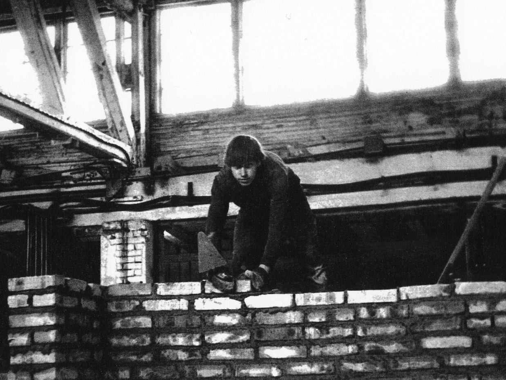

Родился 29 мая 1955 годав Люберецком районе Московской области в семье служащих
Образование: высшее, Московский институт электронного машиностроения (МИЭМ), Российская академия госслужбы при Президенте РФ, кандидат экономических наук
Семейное положение: женат, в браке 40 лет, взрослые сын и дочь, трое внуков
Трудовая деятельность:
1977-1986 Инженер оборонного предприятия НИИ «Дельта» Министерства электронной промышленности СССР
1986-2001 Секретарь, председатель Московского городского комитета профсоюза работников радиоэлектронной промышленности, первый заместитель председателя Московской федерации профсоюзов
2001-Н/В Депутат Московской городской Думы III, IV, V, VIсозывов, председатель комиссии по социальной политике и трудовым отношениям, член комиссии по экономической политике и финансам.
2015 Избран Председателем Московской Федерации профсоюзов
В лихие 90-е годы был одним из организаторов многотысячных профсоюзных акций протеста, основными требованиями которых были: погасить долги по зарплатам и пенсиям, сохранить социальные гарантии и обеспечить занятость населения. Активно участвовал в переговорах с властями и формировании в Москве системы социального партнерства.
Являясь депутатом Мосгордумы, принимал непосредственное участие в разработке законов города Москвы о социальном партнерстве, о труде и занятости, об охране труда и квотировании рабочих мест для инвалидов и молодежи, а также о мерах социальной защиты для всех льготных категорий москвичей и социальной поддержки старшего поколения, инвалидов, семей с детьми.
Имеет тесные контакты и сотрудничает с городскими общественными организациями инвалидов, ветеранов, молодежи, многодетных, с муниципальными депутатами районов города Москвы. Является членом Президиума Московского городского регионального отделения партии «ЕДИНАЯ РОССИЯ».
Стоял у истоков создания Московской Федерации профсоюзов, её становления и укрепления авторитета среди трудящихся, работодателей и властей города. С 1991 года является членом Президиума Совета, первым заместителем председателя Московской федерации профсоюзов, а в 2015 году избран её председателем.
Отмечен государственными и общественными наградами, среди которых медаль в память 850-летия Москвы, медаль Минтруда РФ за заслуги в социально-трудовой сфере, нагрудный знак ФНПР за заслуги перед профдвижением России, медаль ФНПР 100 лет профсоюзам России,почетный знак Мосгордумы за заслуги в развитии законодательства и парламентаризма.